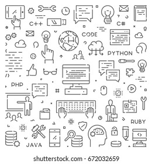
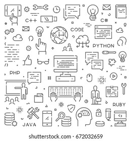
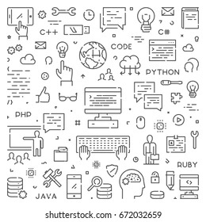
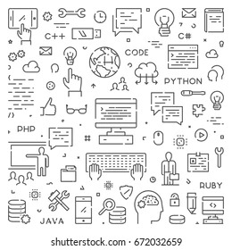

Барате програмер?
Здраво јас сум Виктор Христовски, студент на ФИНКИ ви благодарам што го потрошивте вашето време да го погледнете моето портфолио.
Во тек .Станување доста вешт во фронт-енд порграмирање
 



Ученик на најлудото училиште во нашиот град ОУ Гоце Делчев. Иако училиштето е доста познато во нашиот град, заради учениците, наставниците беа доста добри и вешти, т.ш. појќето успеја да не исправат на правилниот пат.
2009
2018
Бев ученик во СОУ Цар Самоил Ресен, на смер Природно математички науки .Доста добро поминав таму со успех и со дружба.Во такво мало гратче каде секој со секој се знае неможиш лошо да поминиш.
2018
2022
Студент на ФИНКИ на смер Компјутерски науки, прва година, така да немат нешто многу за да кажам.
2022
денес
Кликни на елемент за кратка приказна
Низ годините работав различни работи и секогаш имав обврски, некогаш повеќе, а некогаш помалку, но тие сè уште беа таму. Во таква ситуација се научив многу вешто да располагам со времето
Најубавото нешто на светот е личност со насмевка на лицето и добро расположение, затоа постојано се обидувам да ги насмеам другите луѓе. Во детството не беше толку изразено, но подоцна се изразе мојата хумористичност
Уште како дете бев многу неврозен и тоа ме доведе до доста проблеми со родителите, но и со другарите, затоа во еден момент во средно училиште решив да не и давам на нервозата да превземи и од тогаш сум нов чоек
Според мене ако се нафатиш да преш нешто напрај го до крај и дај све од себе, ако не ич не почви да го преш, тоа мотото кое ме води низ животот
Од секогаш сум сакал да помагам на други луѓи на било кои можен начин.
Доста нов сум со јазиков почнав да го учам пред некое време
Претходниот семестар се запознав со јазиков и доста добро ми легна
Во средно училиште се запознавме со јазиков, но само со неговата синтакса, додека на факултет се стекнавме со знаење од ООП и ООД
Се запознав овај семестар, доста интересен јазик, мислам дека доволно го совладав што мислите вие ?
Почнав јазиков да го учам уште од средно, додека на факултет го доиспраксирав

Дедо ми знаеше како да играм на многу млада возраст. Игравме многу кога бев дете, бев на многу натпревари на ниво на земја. Денес сум не толку добар како што бев на 17 години, затоа што немам време да играм, многу сум зафатен со факултет, но понекогаш за да си ја оладам главата, знам да играм неколку натпревари и пробајте некои интересни и многу глупави работи за забава.
Во деновите од викендот знам понекогаш да го поминам времето со велосипед, ми ги чисти мислите од другарскиот викенд и да се одморам малку. Во Скопје е многу тешко да се вози велосипед, не затоа што патеките се ужасни, затоа што ако го оставите само малку, магионичар ќе го исчезне и нема да ги видиш волшебниците, ете како добро тие се.
Одам во теретана од прва година средно, но редовноста падна. Прво, одев речиси секој ден во неделата, но знајте дали има слободно време распоред, тогаш можеби ќе одам. Се надевам дека во следната година подобро ќе го балансирам времето, затоа што тоа е убаво хоби што сум горд што го имам.

Најдобриот работник кој сум го запознал
Креира добра работна атмосфера
Совршено ја извршува работата и секогаш наоѓа начини да се подобрит
Интересна и веродостојна личност